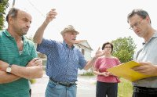

Skupljajući drva četiri-pet kilometara od Žejana, kamo je išao po drva čitav život, Rogutić se prilikom hodanja preko srušenih debla spotaknuo i pao te glavom udario baš u vrh cjepanice. Umro je u vozilu Hitne pomoći, na putu za bolnicu
 Žejane – Josip Rogutić (74) iz Žejana smrtno je stradao jučer prijepodne nesretnim slučajem u šumi kod Žejana. Nakon što je nesretno pao i glavom udario u cjepanicu, muškarac je podvrgnut reanimaciji, ali se nažalost ozljeda glave pokazala smrtonosnom. Umro je u vozilu Hitne pomoći, na putu za bolnicu.
Tragedija u šumi se zbila oko 11.30 sati, na predjelu koji mještani Žejana nazivaju Kalić, udaljenom četiri-pet kilometara, kamo je Rogutić išao po drva sa članovima svoje obitelji. Prilikom hodanja preko srušenih debla Josip Rogutić se spotaknuo i pao te pritom glavom udario baš u vrh cjepanice, pokazao je kasniji policijski očevid.
"Strašno je to što se dogodilo... Znam da je ujutro, oko 7-8 sati, Josip Rogutić zajedno sa sinom i unukom otišao u šumu po drva. Imaju zglobni traktor, znali su natovariti po 4-5 prostornih metara drva. Što se točno jutros dogodilo ne znam, ali mi je poznato da je njegov sin, koji inače radi u policiji, odmah alarmirao dežurne službe. Još čekamo da se vrati najbliža rodbina umrlog kako bismo saznali detalje, ali vijest o velikoj tragediji se već proširila mjestom," kazao je jučer rano poslijepodne šogor stradalog, Žejanac Drago Doričić potresen događajem.
Prema njegovim riječima, Rogutić je praktički "cijeli život" odlazio u šumu po drva. Bio je umirovljenik, od rođenja je živio u Žejanama, a u sjećanju mu je da je svojedobno bio pravi poljoprivrednik koji je s obitelji držao stotinjak ovaca. Mještani Žejana su se jučer prisjetili i okolnosti da je jedan unuk Josipa Rogutića u bolnici gdje se liječi od posljedica prometne nesreće koju je ne tako davno imao kod Bresta.
"Josip je nekoliko mjeseci bio na Korčuli, kod najbliže rodbine, vratio se natrag i, eto, sudbina je htjela da se dogodi tragedija," konstatirao je njegov šogor.
Djelatnici policije obavili su jučer poslije očevid na mjestu događaja, čije se okolnosti i dalje istražuju.
Fiore Vežnaver
June 5, 2005
© 2005 Novi List